Better Claude puts every Claude on your Mac in one window: Claude, its copies,
Claude Science and Claude Code, with claude.ai and Codex alongside. Search every
message you've ever sent, let each Claude look up your past work, know the moment an
agent needs you, and see where your limits went.
Everything Claude keeps on your Mac, finally in one window
Every conversation, one timeline
Cowork sessions from Claude and every copy of it, Claude Code sessions, and the
Code tab, newest first. Search looks inside every message as you type, from an
index kept on your Mac, and still finds conversations Claude Code has deleted.
Read any conversation without opening Claude, and watch it update while Claude
is still writing.
Every project, whole
Claude files things by app and account; you think in projects. Each project gets
one page with its conversations from every Claude and account, the pull requests
they opened, the files Claude changed, what it all cost, and when you worked on it.
What you keep correcting there becomes lines for its CLAUDE.md, so the next
session already knows.
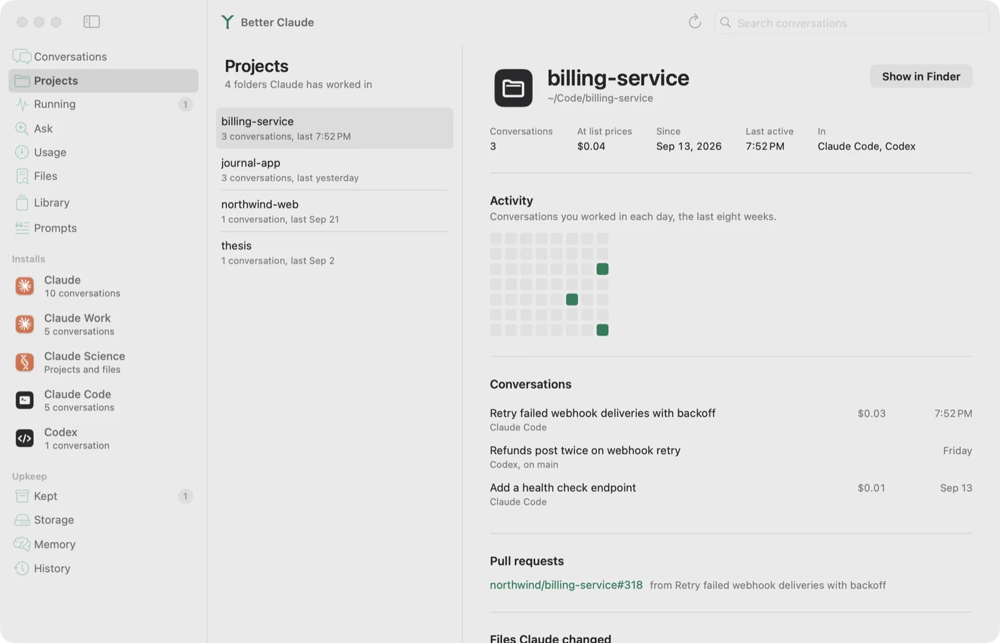
Claude remembers your past work
Switch it on for any Claude, and it can search and quote your past conversations
when you say “like we did last time”: what was decided, which conversation changed
a file, where you left off. Each account's Claude reads only its own history
unless you open the door to another, one way at a time.
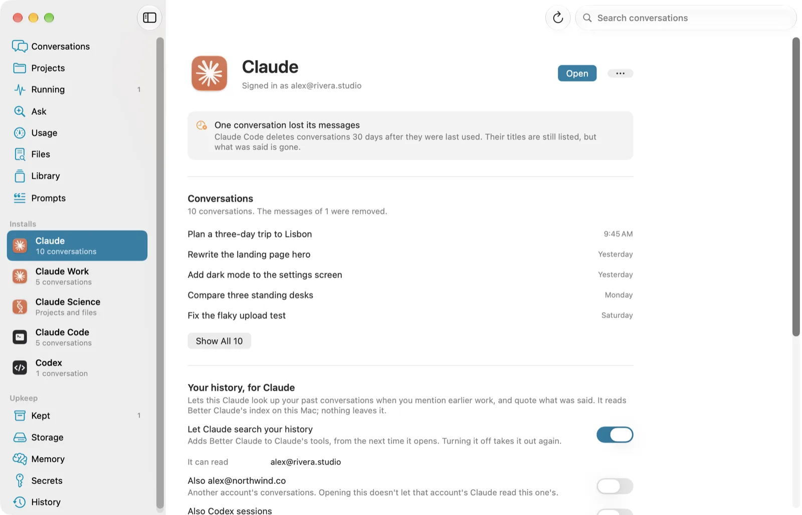
Know when an agent needs you
Every Claude Code session on the Mac, in any terminal or in Claude's Code tab,
and whether it's working, done, or waiting on a permission or an answer. An alert
arrives the moment one needs you, and clicking it brings the right app forward.
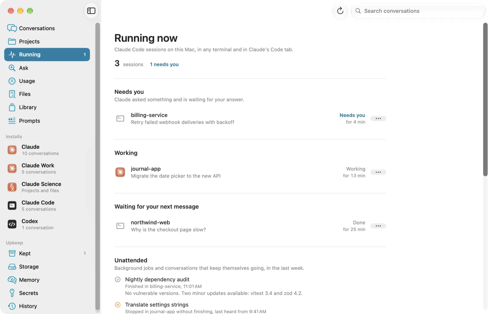
Ask your history
Ask a question about your past work and get a short answer with the
conversations it came from, written by the model built into macOS. The question,
the search and the answer all stay on your Mac.
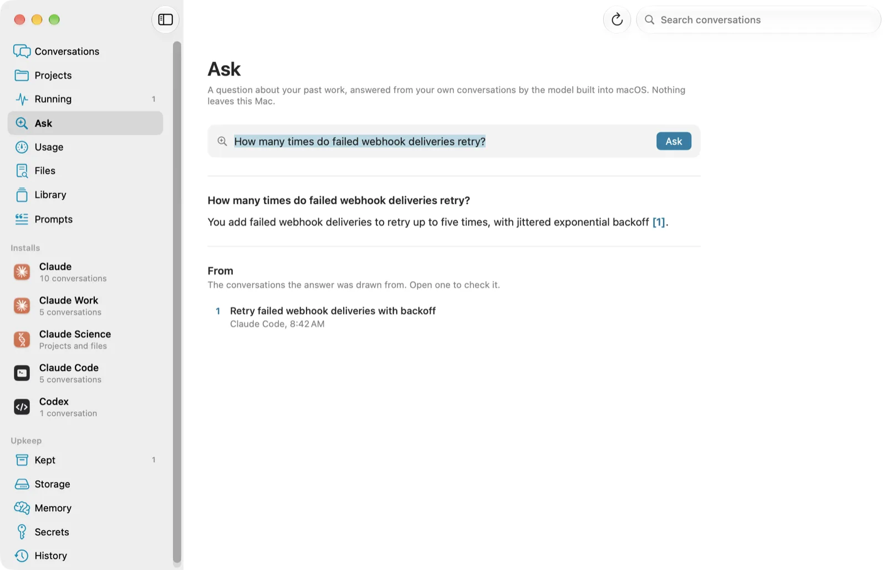
Your limits, and what used them
Every account's five-hour and weekly limits in one place, when each resets, and
where the week is heading at your current pace. See which projects and
conversations used the most, and continue a conversation in the account with the
most room left.
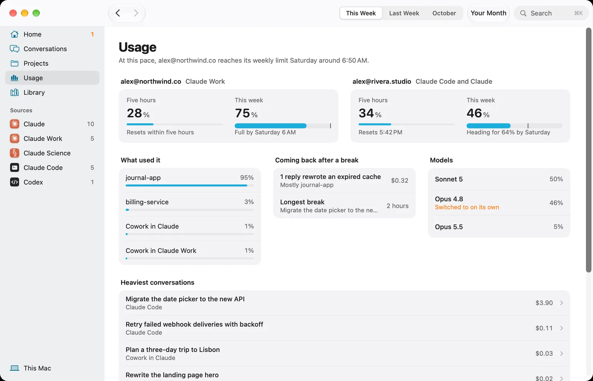
What the sub-agents did
A long Claude Code session sends out sub-agents, and until now their work was
invisible. Each one is listed under its conversation: the task it was given, what it
came back with, what it cost, and the agents it spawned in turn. Their replies count
in every total, which on a busy Mac is about a third of them.
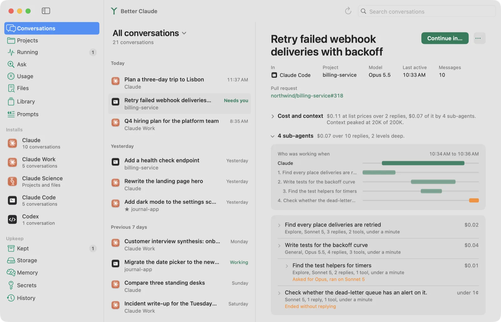
See why a session cost so much
Every Claude Code conversation, reply by reply: how much each reply had to read,
how close it came to the context window, where Claude compacted, and which replies
cost the most, which ones came back to an expired cache, and when the model
changed without anyone asking. And a heads-up before an account runs out, naming
the one with room to spare.
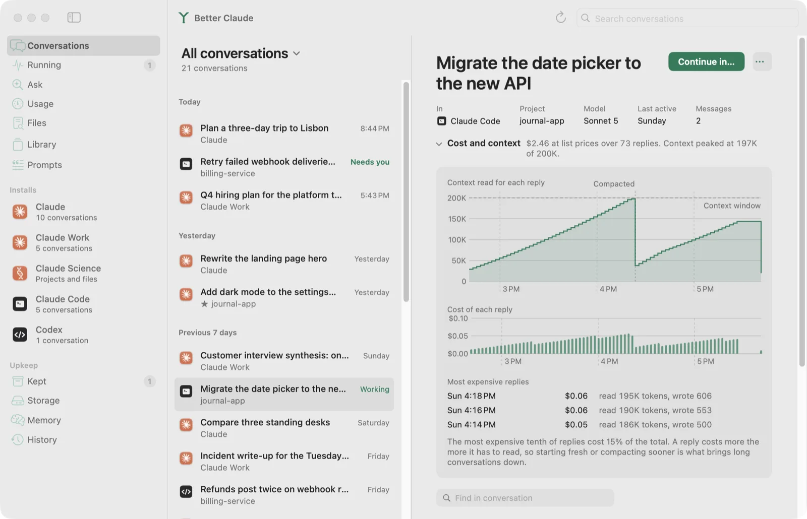
Your month with Claude
A month across every Claude on your Mac on one card: the days and hours you
worked, which models answered, the tools Claude reached for, and what it all came
to. Project names stay off it unless you want them on. Save it as an image.
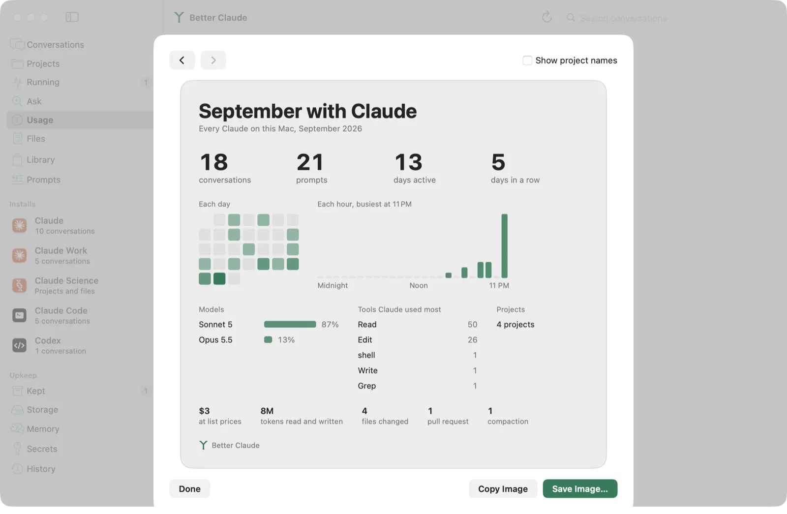
Where every line came from
Every file Claude changed, the conversations that changed it, and every version
saved before each change, with a diff against the file now. Put any version back
and undo it later, and see which conversation each commit most likely came from.
The versions are kept even after Claude Code's cleanup deletes them.
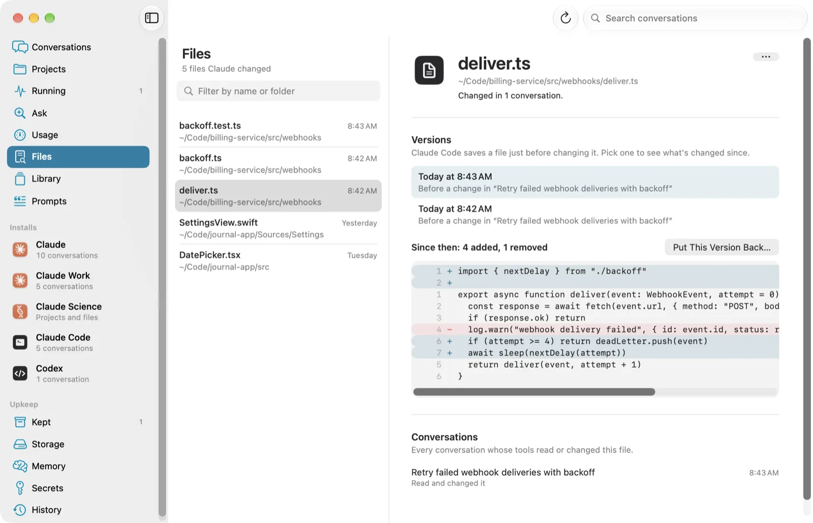
Take back what a session did
Every file a conversation edited or created, compared with how it was before it
started. Put back one file or all of them in one step, long after the session
ended, and undo that too. Claude can see the same list when it picks up where an
earlier session left off.
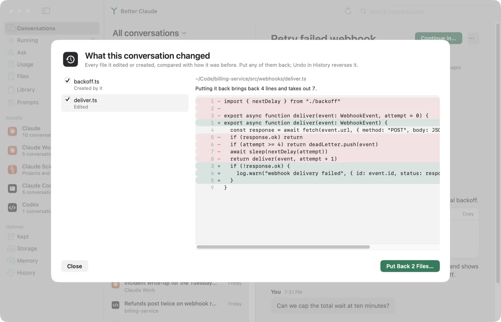
Stop typing the same thing
The prompts you type into Claude Code again and again, with near-identical
wordings counted as one. Make any of them a skill in a click, so Claude loads it
when it applies, and take it out again from History.
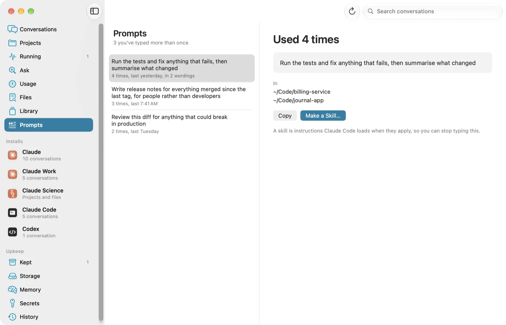
What needs attention, and a second opinion
Each Claude's page says which MCP servers failed to start or need you to sign in,
and which hooks failed, and offers narrow rules for the commands Claude Code keeps
asking about. Copy an MCP server from one Claude to another. And replay a past
conversation on a newer model with your own API key, to read its answers beside
the ones you got, with the cost shown before anything is sent.
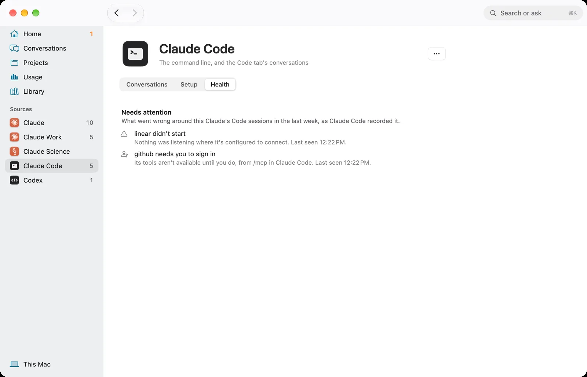
Carry it anywhere
Turn a long conversation into a one-page brief, tightened by the model built into
macOS, and start a fresh Claude Code session with it. Import the export claude.ai
emails you, and your web conversations join the timeline; Codex sessions appear
too. Back everything up to iCloud Drive in one file, encrypted with a password
only you know.
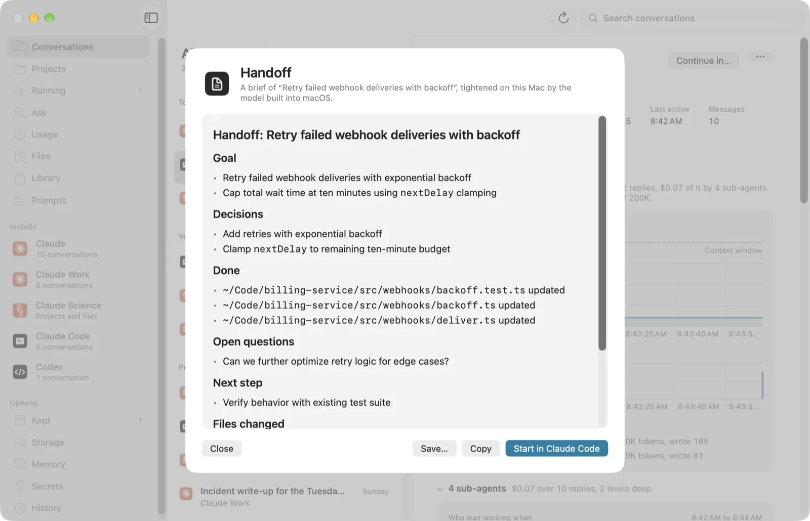
Continue anywhere, and take it back
Carry a conversation into another Claude or into a Claude Code project with the
chat intact, down to its images and documents. You see where it's going and what
will happen before anything is written. Fork a Claude Code conversation from any
message. Every copy and fork can be undone from History.
Find the keys you pasted
Every key and token that ended up in a conversation, pasted in, printed by a
command, or written by Claude, with a link to rotate it. It's never shown whole,
and it's hidden from what Claude reads back, from exports and from handoffs.
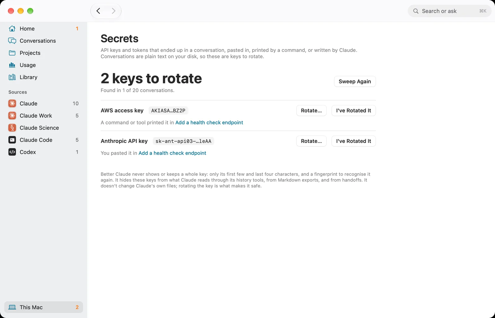
Kept, before Claude Code deletes it
Claude Code deletes a conversation 30 days after you last used it. Better Claude
keeps a copy as each one changes, as clones that take no space until the original
is gone. Read it later, continue it elsewhere, or put it back where
claude --resume finds it.
What each Claude is set up with
Every install has its own page: who it's signed into, its conversations, and the
skills, MCP servers, plugins and hooks it can use. Compare any two side by side.
It even notices an API key sitting in your settings in plain text.
Library. Files, images and code Claude made, each linked to its conversation.Storage. Where Claude's space goes, and what's safe to move to the Trash.Memory. What Claude remembers about every project, and memory whose folder is gone.
Better with Parallex
Parallex runs separate copies of Claude, one
per account, each with its own Dock icon and its own data. Better Claude sees every
copy and moves work between them, so several accounts work like one.
Your conversations stay yours
Nothing leaves your Mac
Better Claude reads what Claude already keeps on disk, and its index, its search and Ask all run on your Mac. It asks the internet whether there's a newer version, and sends a conversation only when you replay it on another model with your own API key, after showing what that costs.
It never overwrites
Copies and forks create new files beside the old ones, and each keeps a receipt, so Undo removes exactly what was added and leaves anything you've since edited alone.
Nothing is deleted outright
Freeing space moves things to the Trash, and conversations and credentials are never offered.
Credentials don't travel
Sign-ins, audit logs and permission grants never go with a conversation, and a conversation that looks like it holds a key isn't copied.
Claude reads only what you allow
No Claude can search your history until you switch it on for that Claude, and each reads only its own account's conversations unless you open the door to another. Turning it off takes it out of Claude's settings again.
Updates are signed
Each update is checked against Better Claude's signature before it replaces anything.
Good to know
It's a Mac app, for macOS 14 or later, and it isn't sandboxed: it has to read other apps' folders, which also keeps it off the Mac App Store.
The app isn't notarized. The first time you open a download, macOS stops it: open System Settings, then Privacy & Security, and choose Open Anyway. Updates from inside the app don't ask again.
Ask uses the model built into macOS, so it needs macOS 26 or later with Apple Intelligence turned on. Everything else works on macOS 14.
Claude's files aren't a documented format, and Claude Code changes them often. Better Claude's tests check the shape of every Claude Code and Codex version it has seen, and the app tells you when a new one writes something it doesn't read yet.